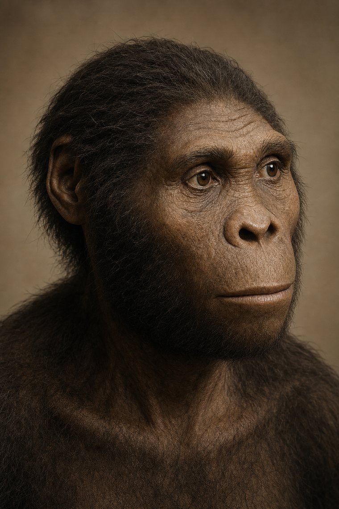

Australopithecus africanus
The fossil that first convinced the world humanity began in Africa.
Overview
When anatomist Raymond Dart described the Taung Child in 1925, he made the then-radical claim that humanity's cradle was Africa, not Europe or Asia. Australopithecus africanus has anchored southern African palaeoanthropology ever since.
It lived from about 3.3 to 2.1 million years ago and is known from rich cave sites like Sterkfontein, including the famous adult cranium 'Mrs Ples'.
Anatomy & Body
A. africanus was a gracile australopith — bipedal, with a slightly more rounded braincase and somewhat smaller, more human-like face and teeth than A. afarensis, though still with a projecting jaw.
Like its relatives it retained climbing adaptations in the upper body, and was small-bodied with notable size differences between the sexes.
Brain & Cognition
At around 450 cc its brain was modestly larger than earlier australopiths. Endocasts suggest a still ape-like organisation, but the trend toward expansion that would define Homo was beginning.
Behavior & Culture
Dietary studies of tooth chemistry show a broad, variable diet that included tougher, more open-habitat foods. The Taung Child's skull bears puncture marks now attributed to a large bird of prey — a vivid reminder that these small hominins were prey as well as foragers.
Key Fossils
- Taung 1 (“Taung Child”) — the juvenile skull and natural brain endocast, the type specimen.
- Sts 5 (“Mrs Ples”) — a near-complete adult cranium from Sterkfontein.
- Sts 14 — a partial skeleton preserving the pelvis and spine.
Relationship to Us
A. africanus is variously seen as a direct ancestor of Homo, an ancestor of the robust Paranthropus line, or both — a pivotal but still-debated southern branch.
Discovery & history
In 1924 a quarry at Taung in South Africa sent a box of fossil-bearing rock to Raymond Dart, an anatomist at the University of the Witwatersrand. Inside was the face, jaw and a natural endocast of a young child. Dart described it in Nature in February 1925 as Australopithecus africanus, and argued that this small-brained, upright African creature was a human ancestor.
The scientific establishment rejected him almost completely, and the reason is instructive. Expectations had been shaped by Piltdown Man — a specimen with a large braincase and an ape-like jaw, "found" in England in 1912. Piltdown implied that big brains evolved first. Dart's Taung Child was the exact inverse: an ape-sized brain with a humanlike face and, judging by the forward-placed foramen magnum, an upright posture. It also had the disadvantage of being African at a time when Asia and Europe were the assumed cradles.
Vindication came slowly, through Robert Broom's work at Sterkfontein from 1936, and above all his 1947 discovery of the adult cranium STS 5, nicknamed "Mrs Ples". Piltdown was finally exposed as a deliberate forgery in 1953, by which point Dart had been right for nearly thirty years.
Debates & open questions
Is africanus our ancestor, or a cousin? This is the long-running question. Its relatively lightly built face and moderate brain make it a plausible bridge between the earlier australopiths and Homo. But other researchers place it closer to the robust Paranthropus lineage, or treat it as a southern side branch that left no descendants. The 2008 discovery of Australopithecus sediba at nearby Malapa complicated things further, since sediba has its own claim to be transitional to Homo.
Dating remains a real weakness. The South African cave deposits contain no volcanic ash, so there is nothing to date radiometrically in the way East African sites allow. Ages depend on flowstone layers, palaeomagnetism, faunal comparison and cosmogenic nuclide burial dating, and the deposits themselves are often reworked. Published dates for Sterkfontein material have varied by more than a million years.
How did the Taung Child die? Lee Berger and Ron Clarke proposed that it was taken by a large bird of prey, pointing to puncture and scratch damage around the eye sockets that closely matches marks made by eagles on modern primate skulls. The hypothesis is widely cited but not universally accepted, and other researchers favour a leopard or simple accidental deposition.